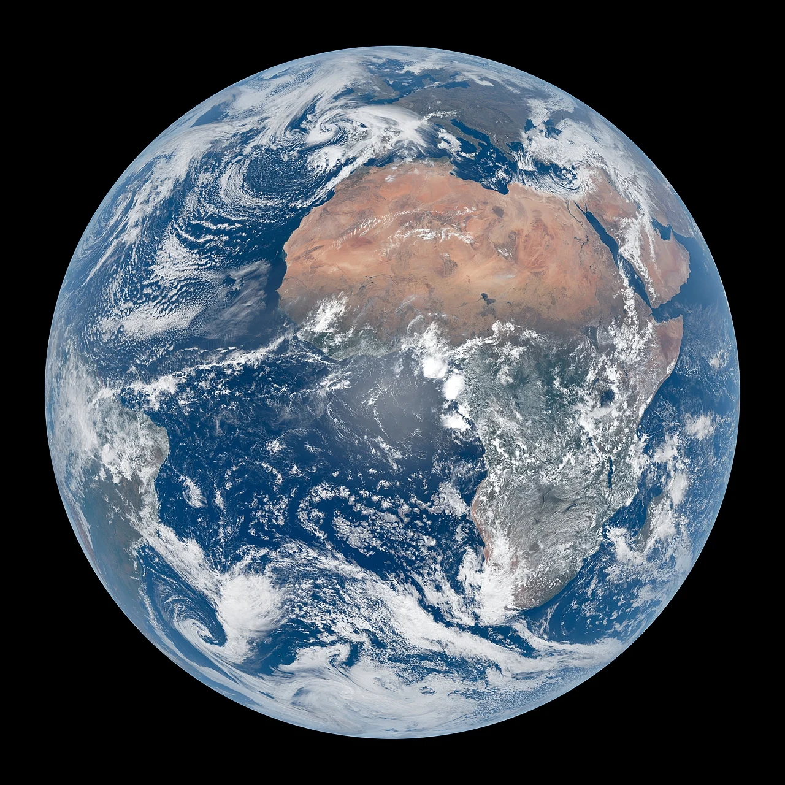
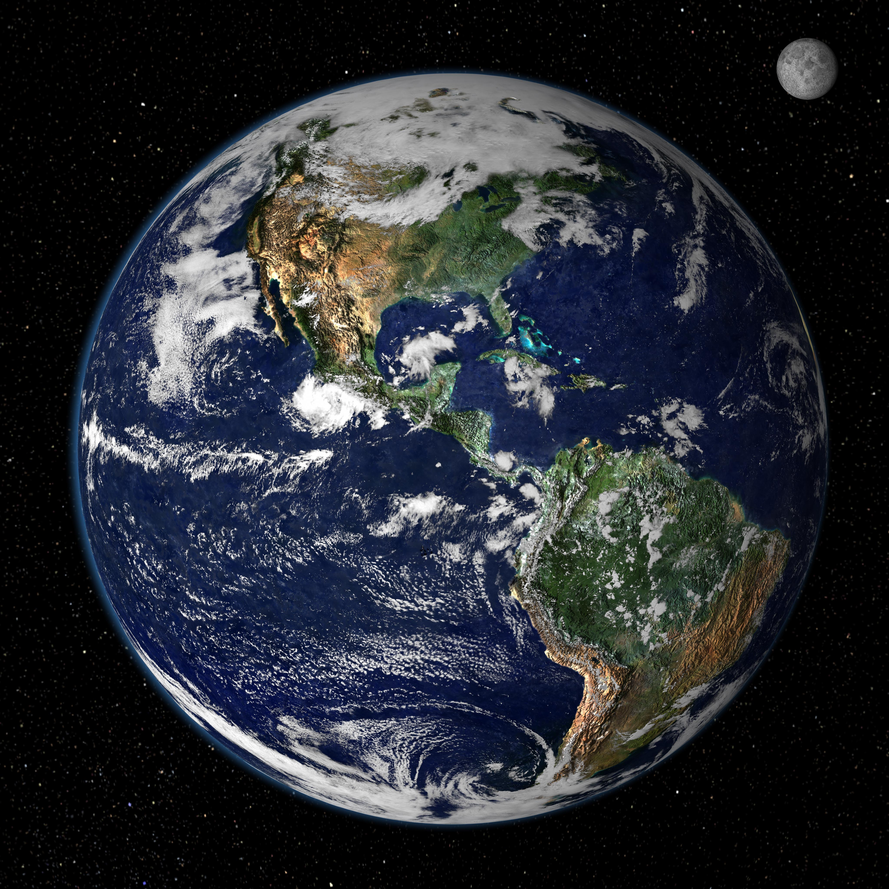

Earth
Our Home from Above


Five Facts About Earth
- Earth is the third planet from the Sun.
- About 71% of Earth's surface is covered by water.
- Earth has one natural satellite: the Moon.
- Earth's atmosphere is made mostly of nitrogen and oxygen.
- Earth takes approximately 365.25 days to orbit the Sun.
From Day to Night
Earth's rotation brings different parts of its surface into sunlight and darkness. Try switching this page between daytime and nighttime colors.
Day mode is active.